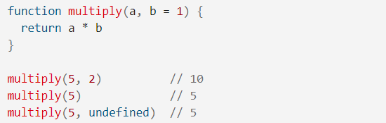
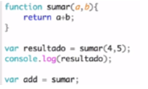
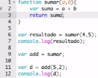

Son un conjunto de instrucciones que al ser ejecutadas realizan las instrucciones especificadas dentro de
su campo. Esta puede retornar en la finalización de la instrucción, un valor específico para luego
utilizarlo en algún fragmento de nuestro código. Como ejemplo, podemos tomar los methods de los arreglos
en el que construímos una función para una tarea determinada, en algunos casos necesitamos que nos devuelva
el valor y en otros que sencillamente se ejecute la instrucción.
Una función puede requerir ser llamada pasándole cierta información o no requerir información.
Esto quiere decir que algunas pueden llevar parámetros (requiere información) y otras que no
llevan parámetros (no requieren información).
Una función puede recibir tantos parámetros como sea necesario, aunque no es buena práctica que la misma
lleve 4 o más parámetros.
Parámetros
Cuando una función recibe un parámetro, dicho parámetro funciona como si se tratara de una variable
disponible para la función (variable de ámbito local). Los parámetros predeterminados de función,
permiten que los parámetros con nombre se inicien con valores predeterminados si no se pasa ningún valor.
En JavaScript, los parámetros de función están predeterminados en undefined cuando estos no están declarados
explícitamente. Sin embargo, a menudo es útil establecer un valor predeterminado diferente.
En el siguiente ejemplo, si no se proporciona ningún valor para ”b” cuando se llama a ”multiply”, el valor
de ”b” sería undefined, al evaluar ”a * b” y multiply devolvería NaN.
const cuentaSumar = (a, b) => {console.log(`El resultado de la suma es: ${a + b}.`)return a + b;}console.log(cuentaSumar(5, 2));
Como es una función que no retorna un valor, es decir, que no nos está devolviendo
un resultado, el mismo no puede ser colocado en el DOM porque es como que estamos
tratando de colocar el fragmento de la función completa y no solo el resultado
que estamos buscando. Por eso el resultado que nos muestra el DOM es undefined.
Por lo contrario, si buscamos el resultado de esta operación en la consola, vamos a encontrar
que se efectua correctamente el resultado que esperamos. Esto sucede porque en la consola
no necesitamos que muestre un valor específico, si no, que podemos pasar la función
como argumento para mostrar el resultado.
Return
Una función en JavaScript puede devolver un resultado si se le introduce la palabra clave return, donde
return es aquello que queremos sacar de la función. Una vez se llega a la sentencia return se produce la
devolución del resultado y se interrumpe la ejecución (finaliza) de la función. Por ello, estructuralmente
return es la última instrucción dentro de la función. En JS una variable puede tener el valor de una función.
Con los parámetros predeterminados en EC2015, puedes asignar 1 como valor predeterminado para b en el
encabezado de la función lo cual en esta ocasión de multiplicar si solo pasamos un parámetro nos puede
retornar de todas maneras el resultado:
cuentaMultiplicar = (a, b = 1) => {return a * b;}console.log(cuentaMultiplicar(5, 2));

Cuando una función tiene varios parámetros, se debe invocar escribiendo su nombre seguido de los parámetros
en el orden adecuado.
Sintaxis
Primero, debemos declarar la palabra reservada “function” seguida del nombre que le daremos a la función.
Luego, de ser necesario colocaremos los paréntesis en donde se encuentran los parámetros de la función y
si son más de uno, estos deben estar separados por coma. Por último, debemos saber que las declaraciones
que definen la función deben estar encerradas entre {}.
En el caso que necesitemos que la función nos retorne un resultado en específico, en la última línea de
la construcción de la misma debemos declarar la palabra clave reservada “return”, seguido del valor que
necesitemos que nos tiene que dar.
Ejemplos:
Crearemos una variable con el nombre “resultado”, el valor que le agregaremos a la variable es el
nombre de nuestra función “sumar()” dentro de los paréntesis pondremos los parámetros que vamos a
desear sumar.
Vamos a crear una variable add con el valor de la función “sumar”, es decir, la variable contiene el valor
de esa función. Para finalizar este paso debemos ingresar la palabra clave “return” con la operación de la
suma.

Luego, podemos usar add definiendo la variable “d” que tendrá el resultado de “add” con parámetros
(5 , 2). Al imprimir el valor de “d” observamos que tenemos como resultado 7.
let d = add(5, 2); console.log(d);
Una variable también puede ser de tipo función la cual podemos usar posteriormente en cualquier
parte del código, pudiendo ser esta variable asignada a otras variables o ser colocada como argumento
en otra función.
Ámbito
Trabajemos ahora con ámbito. Vamos a extender el ejemplo de la función anterior para obtener el resultado
antes de retornar un valor. Esto lo vamos a hacer declarando la variable “suma” dentro de la función, a la
cual le asignaremos el resultado de adicionar “a y b”. En vez de retornar (a + b), la función ahora retorna
el valor de suma.

En JS el alcance de las variables se determina desde las definiciones más internas hacia la más externa.
Por ejemplo, la variable suma solo existe dentro de la función “sumar” dentro del ámbito de las llaves “{}”.
Si queremos hacer el llamado de la variable suma nos retornará un error ya que no existe en el ámbito global
del código.
Pero, si asignamos una variable antes y fuera de function esta si podrá ser retornada si realizamos el
llamado.
Self Invoking
Este tipo de función puede llamarse con tan solo poner los parámetros luego de terminar de construir
la función.